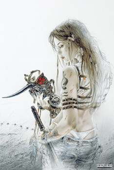
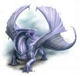
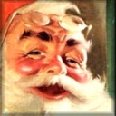

Forums galactiques > Taverne galactique : lieu de discussion informel > Carambar party
Pages : 1 2 ... 5 6 7 ... 34 35
| Rescator Réputation à la taverne : 55  01/08 ETU 15:09 | Score : 0 Détails bon d'accord.
| ||
| Ellana Caldin Réputation à la taverne : 16  01/08 ETU 15:10 | Score : 0 Détails xpldr rescator tu craint vraiment bon qui a des blagues ?
| ||
| delius Réputation à la taverne : 3  01/08 ETU 15:11 | Score : 0 Détails j'en ai une mais pas drole: pourquoi mario bros parceque mickey maouse
| ||
| Rescator Réputation à la taverne : 55 01/08 ETU 15:51 | Score : 0 Détails BRAVO..BRAVO..BRAVO....
| ||
| Shino Réputation à la taverne : 32  01/08 ETU 15:56 | Score : 0 Détails Le vers applaude, c'est pas bon signe
[Applauder est l'action d'applaudir a contre coeur] (nouveau verbe) | ||
| delius Réputation à la taverne : 3 01/08 ETU 16:08 | Score : 0 Détails une blonde souffle dans le pot d'echapement de sa voiture pour la remettre d'applond car elle c'est fait caramboller.tout a coup une autres blonde passe et lui demande ce qu'elle fait l'otre lui repond et l'otre retorque "pffffffffffff t'es con tu as laisser la fenetre ouverte"
| ||
| Shino Réputation à la taverne : 32 01/08 ETU 16:18 | Score : 0 Détails Applaudond a celui là aussi ^^
(c'est plutot connu) la mienne (plus connue et plus idiote) Pourquoi les belges laissent-ils la porte des WC ouverte? Pour qu'ils sachent quand on regarde à travers la serrure (salutations aux belges) | ||
| Rescator Réputation à la taverne : 55 01/08 ETU 16:22 | Score : 0 Détails Si j'applodis c'est parce que c'etait drole.
et aussi BRAVO..BRAVO..BRAVO à Madame. | ||
| Vlavv Réputation à la taverne : 155  15/08 ETU 21:58  | Score : 0 Détails - Eh Gérard, t'as pris un bain ?
- Eeeuh non, pourquoi, y en manque un ? | ||
| Von Rüppert Réputation à la taverne : 25 15/08 ETU 22:21 | Score : 0 Détails Pardonnez moi,
mais qui est celui qui manque? | ||
| Sandalphon Réputation à la taverne : 592  15/08 ETU 22:24 | Score : 0 Détails (Oulah, Von Rüppert.... -_-'... sans commentaires.)
Comment appelle-t-on un chien sans pattes ? On l'appelle pas, on va le chercher... | ||
| Vlavv Réputation à la taverne : 155 15/08 ETU 23:02 | Score : 0 Détails Ouhlà, si l'ami Sandalphon se lance dans les blagues carambars ça va faire mal :p
--- Comment appelle-t-on un Wookie bavard ? - Un talkie-wookie ! --- (note-à-benêt : [wookie (n.m.) : race originaire de Kashyyyk]) | ||
| Santa Claus Réputation à la taverne : 268  16/08 ETU 00:01 | Score : 0 Détails Bon, je dois vous faire une confidence les jeunes,
C'est très dur de perdre sa belle mère ... ... pour tout vous dire, c'est impossible. | ||
| Cosmic Roger Réputation à la taverne : 511  16/08 ETU 00:23 | Score : 0 Détails (du vécu Santa Claus?)
Monsieur et Madame Tallut ont quatre fils, comment les prénomment-t-ils? Jean, Jean, Jean et Jean on les appelle donc les quatre Jean Tallut! | ||
| Sahred Del'Bashir Réputation à la taverne : 45  16/08 ETU 00:58 | Score : 0 Détails Un jeune curé, très angoissé, et après avoir été incapable de prononcer un seul mot le jour de son premier sermon, demande conseil à l'Archevêque pour être à la hauteur dimanche prochain. Ce dernier lui conseille de se verser quelques gouttes de vodka dans un grand verre d'eau pour être plus détendu.
Le dimanche suivant, le jeune prêtre se sentit si bien qu'il aurait pu parler n'importe où de n'importe quoi. De retour à la sacristie, il trouve une lettre laissée par l'Archevêque, ainsi rédigée : Mon fils, La prochaine fois, mettez quelques gouttes de vodka dans un grand verre d'eau et non quelques gouttes d'eau dans votre verre de vodka. Ensuite, je vous fais part de quelques observations afin que ce que j'ai vu aujourd'hui ne se reproduise pas. 1. Il n'est nul besoin de mettre une rondelle de citron sur le bord du calice. 2. Évitez de vous appuyer sur la statue de la Sainte Vierge et surtout, évitez de la serrer dans vos bras et de l"embrasser. 3. Il y a 10 commandements et non 12. 4. Les apôtres étaient 12 et pas 7 et aucun n'était nain. 5. Nous ne parlons pas de Jésus Christ et ses apôtres comme de "J.C & co". 6. Nous ne nous référons pas à Judas comme " à ce fils de pute ". 7. Vous ne devez pas parler du Pape en disant " le Parrain". 8. Ben Laden n'a rien à voir avec la mort de Jésus. 9. L'eau bénite est faite pour bénir et non pour se rafraîchir la nuque. 10. Ne célébrez jamais la messe assis sur les marches de l'autel. 11. Les hosties ne sont pas des gâteaux apéritif à consommer avec le vin de messe. 12. Les pécheurs iront en enfer et non "se faire enc..." 13. L'initiative d'appeler les fidèles à danser était bonne, mais pas celle de faire la chenille dans toute l'église. 14. L'homme assis près de l'autel auquel vous vous êtes référé comme "le pédé" et "le travelo en jupe", c'était moi. Sincèrement, l'Archevêque. P.S. : Jésus n'a pas été fusillé. | ||
| mercredi Réputation à la taverne : 8  16/08 ETU 06:42 | Score : 0 Détails XPLDR , J'avoue ton histoire est trop drole!
Mais bon heureusement que tu as fais ca sur le christianisme , car une histoire de ca genre sur une autre religion aurait put être interprété autrement et t'apporter des histoires ... | ||
| mercredi Réputation à la taverne : 8 16/08 ETU 07:41 | Score : 0 Détails j'ai une blague plutot une histoire ...
Deux fous se proménent au bord de la piscine de leur asile quand, soudain, l'un tombe à 'l'eau. Voyant qu'il se coule ,l'autre saute pour le sauver... Quelles temps aprés il est convoqué par le directeur. - " Bonjour Mr, j'ai entendu parler de votre héroisme ... Suite a cet évenement j'ai deux nouvelles a vous annocer : La premiére est que je pence que vous etes guéri et je vous autorise à quiter l'établissement. La deuxiéme est que votre camarade c'est suicidé , il a été retrouvé pendu ... " Le fou lui repondit l'air de rien : - " Mais non, c'est moi qu'il l'ais pendu pour qu'il séche plus vite ! " Cette histoire est pas de moi , mais elle est trop drole et pourait bien arriver un l'un d'entre nous vu notre niveau ... :) | ||
| Sandalphon Réputation à la taverne : 592 16/08 ETU 11:18 | Score : 0 Détails (Je prends ça pour un compliment, Valve... oups, Vlavv, pardon ;))
Deux oeufs sont dans un poêle. Le premier dit à l'autre : "P'tain, fait chaud ici..." Et l'autre : "AAAAhh, un oeuf qui parle !" . . . . . . . Deux canards sur un étang. Le premier : "Coin coin !" Le deuxième : "Mince, c'est ce que j'allais dire..." | ||
| Vlavv Réputation à la taverne : 155 16/08 ETU 14:25 | Score : 0 Détails Bon, vous voulez me défier dans mon domaine !
Hop, une combo-blagues-à-deux-balles (^_^) -------------- - A combien rouliez-vous ? Demande le gendarme. - A deux seulement, mais si vous voulez monter, il reste de la place. Qu'est-ce qui est rouge avec des bandes blanches et qui sort de la pelouse à 200 km/h ? - Une taupe en Ferrari. Les enfants, nous allons chez tante Lucie, il faudra bien se tenir ! - Pourquoi papa ! C'est glissant chez tante Lucie ? Lors d'un safari, un bègue hurle : «hip... hip... hip...» et tout le monde répond «hourraaaa» ! Et ils se font renverser par un hippopotame. Pourquoi les Russes aiment bien l'huile ? - Parce que les tsars dînent à l'huile ! Qu'est-ce qui cours invisible dans la forêt ? - Un troupeau de vitres. Comment mesure-t-on sous l'eau ? - Avec un mètre nageur ! Deux trompettistes discutent pendant l'entracte : - Tu es en quoi, toi ? demande le premier. - Moi, en si bémol. Et toi ? - En voiture ! Si tu veux, je te ramène... -------------- J'suis fatigué moi... | ||
| live_ocin Réputation à la taverne : 372 16/08 ETU 15:45 | Score : 0 Détails Hé! Vous voulez que je vous raconte une blague vaseuse?
Mettez vos bottes... Hum! veuillez m'excuser... Bon allez pour me rattrapper : - Hé papa! Pourquoi mémé est-elle en train de danser dans le jardin? - Tais toi et donne moi des munitions. |
Pages : 1 2 ... 5 6 7 ... 34 35
Forums galactiques > Taverne galactique : lieu de discussion informel > Carambar party